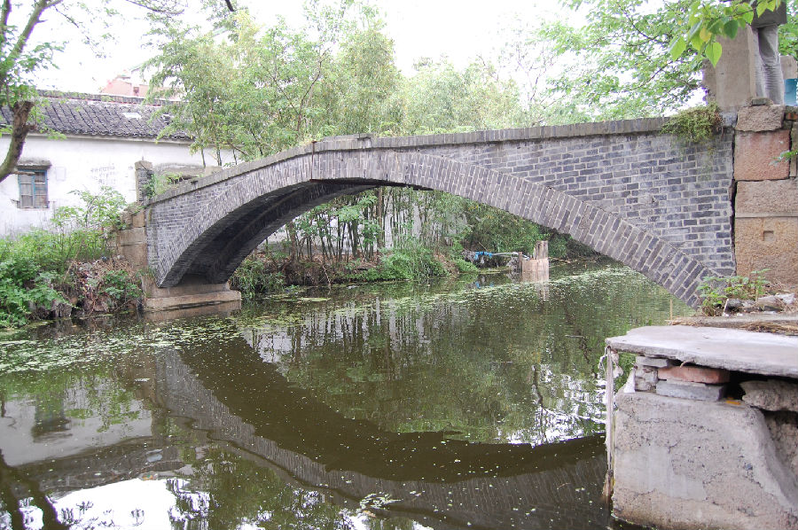

嘉兴市文物保护网 · 市级文物保护点 · 2020-11-06 · 原文

池湾村砖桥位于秀洲区油车港镇池湾村17组（原三联自然村）。据村民介绍为1963年嘉兴市桥梁建筑队建。东西横跨北东王港，系单孔砖混结构拱桥。桥长16.82米，桥面宽1.7米，拱跨9.77米，矢高2.05米。桥面两侧砖砌栏板被拆除，现仅存四端望柱，东西桥堍下墩为石块堆砌，西落坡存石阶3级，东落坡石阶无存由水泥平铺。无桥联，无纹饰。池湾村砖桥作为当地重要的交通设施，用青砖砌成拱桥的工艺在嘉兴现有桥梁中较少见，具有较高的科学价值。2009年公布为嘉兴市文物保护点。